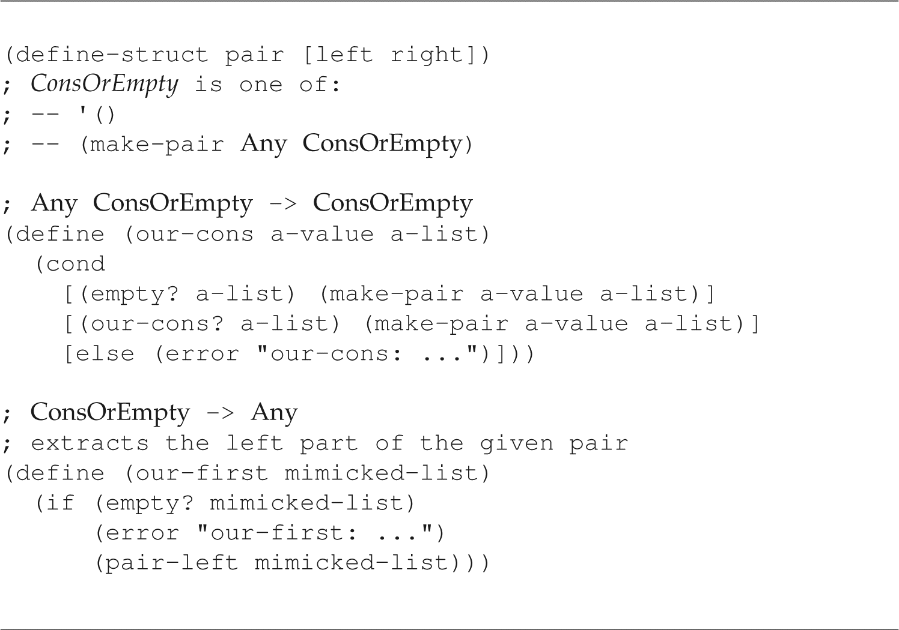
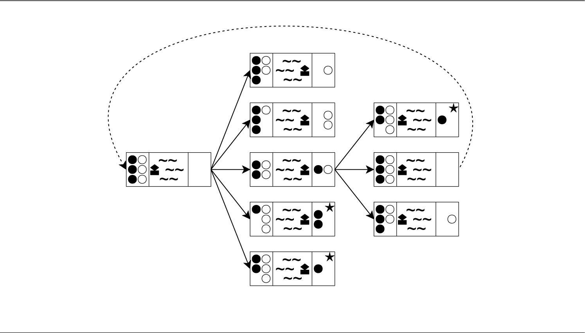
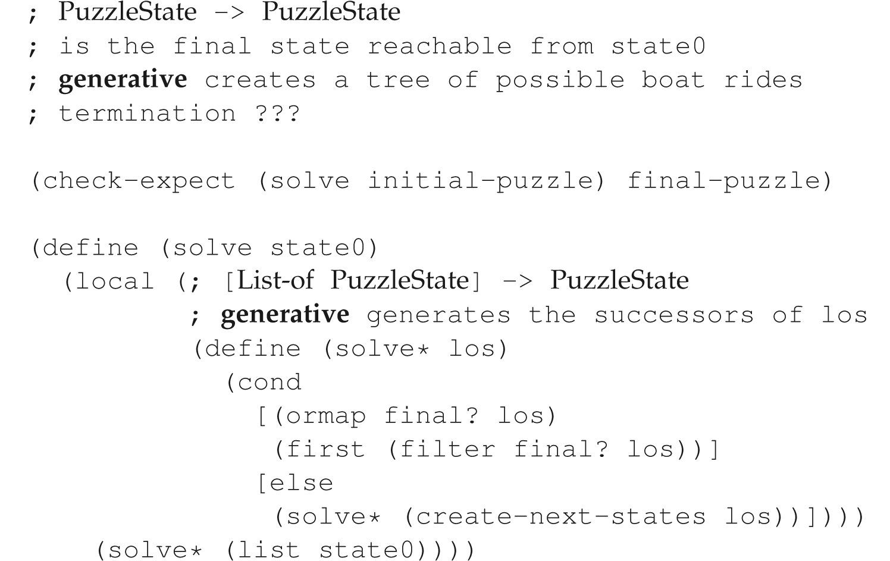

33.2 Data Representations with Accumulators
The end of intermezzo 5 explains that *SL measures the size of containers, say lists, by traversing them and hints that other programming languages use a different, less expensive way, to compute sizes. In this section, we show how to implement this idea with the addition of an accumulator to data representations.
See chapter 12.8 for an early example of this idea.
Consider the ubiquitous lists in *SL. All lists are constructed from cons and '(); operations such as quote and list, for example, are merely abbreviations for these two. As chapter 8.2 shows, it is also possible to mimic lists in BSL with suitable structure type and function definitions.
Figure 189 recalls the basic idea. Stop! Can you define our-rest now?

Figure 189: An implementation of lists in BSL
The key insight is that we can add a third field to the structure type definition of pair:
(define-struct cpair [count left right])
; A [MyList X] is one of:
; -- '()
; -- (make-cpair (tech "N") X [MyList X])
; accumulator the count field is the number of cpairs
As the accumulator statement says, the extra field is used to keep track of the number of cpair instances used to create the list. That is, it remembers a fact about the construction of the list. We call this kind of structure field a data accumulator.
Adding a field to the major list constructor does not come for free. To begin with, it requires a change to the checked version of the constructor, the one that is actually available to programs:
; data definitions, via a constructor-function
(define (our-cons f r)
(cond
[(empty? r) (make-cpair 1 f r)]
[(cpair? r) (make-cpair (+ (cpair-count r) 1) f r)]
[else (error "our-cons: …")]))
If the extended list is '(), count is populated with 1; otherwise, the function computes the length from the given cpair.
Now the function definition for our-length is obvious:
; Any -> N
; how many items does l contain
(define (our-length l)
(cond
[(empty? l) 0]
[(cpair? l) (cpair-count l)]
[else (error "my-length: …")]))
The function consumes any kind of value. For '() and instances of cpair, it produces natural numbers; otherwise it signals an error.
The second problem with the addition of a count field concerns performance. Indeed, there are two concerns. On the one hand, every single list construction comes with an extra field now, meaning a 33% increase in memory consumption. On the other hand, the addition of the field decreases how fast our-cons constructs a list. In addition to the check that the extended list is either '() or an instance of a cpair, the constructor now computes the size of the list. Although this computation consumes a constant amount of time, it is imposed on every single use of our-cons—and just think how many times this book uses cons and does not ever compute how long the resulting list is!
Exercise 518. Argue that our-cons takes a constant amount of time to compute its result, regardless of the size of its input. 
Exercise 519. Is it acceptable to impose the extra cost on cons for all programs to turn length into a constant-time function?
While the addition of a count field to lists is questionable, sometimes data accumulators play a crucial role in finding a solution. The next example is about adding so-called artificial intelligence to a board-game-playing program, and its data accumulator is an absolute necessity.
As you play board games or solve puzzles, you tend to think about your possible moves at every stage. As you get better, you may even imagine the possibilities after this first step. The result is a so-called game tree, which is a (part of the) tree of all possible moves that the rules allow. Let’s start with a problem:
Sample Problem Your manager tells you the following story.
“Once upon a time, three cannibals were guiding three missionaries through a jungle. They were on their way to the nearest mission station. After some time, they arrived at a wide river, filled with deadly snakes and fish. There was no way to cross the river without a boat. Fortunately, they found a rowboat with two oars after a short search. Unfortunately, the boat was too small to carry all of them. It could barely carry two people at a time. Worse, because of the river’s width someone had to row the boat back.
“Since the missionaries could not trust the cannibals, they had to figure out a plan to get all six of them safely across the river. The problem was that these cannibals would kill and eat missionaries as soon as there were more cannibals than missionaries in some place. Our missionaries had to devise a plan that guaranteed that there were never any missionaries in the minority on either side of the river. The cannibals, however, could be trusted to cooperate otherwise. Specifically, they would not abandon any potential food, just as the missionaries would not abandon any potential converts.”
While your manager doesn’t assign any specific design task, he wants to explore whether the company can design (and sell) programs that solve such puzzles.
While puzzles aren’t board games, the program illustrates the idea of game trees in the most straightforward manner possible.
In principle, it is quite straightforward to solve such puzzles by hand. Here is the rough idea. Pick a graphical representation of the problem states. Ours consists of a three-part box: the left one represents the missionaries and the cannibals; the middle combines the river and the boat; and the third part is the right-hand side of the river. Take a look at the following representation of the initial state:
Black circles denote missionaries, white circles cannibals. All of them are on the left-hand river bank. The boat is also on the left side. Nobody is on the right. Here are two more states:
The first one is the final state, where all people and the boat are on the right bank of the river. The second one depicts some intermediate state where two people are on the left with the boat and four people are on the right.
Now that you have a way to write down the state of the puzzle, you can think about the possibilities at each stage. Doing so yields a tree of possible moves. Figure 190 sketches the first two and a half layers in such a tree. The left-most state is the initial one. Because the boat can transport at most two people and must be rowed by at least one, you have five possibilities to explore: one cannibal rows across; two cannibals row across; one missionary and one cannibal go; one missionary crosses; or two missionaries do. These possibilities are represented with five arrows going from the initial state to five intermediate states.

Figure 190: Creating a game tree
For each of these five intermediate states, you can play the same game again. In figure 190 you see how the game continues for the middle (third) one of the new states. Because there are only two people on the right river bank, you see three possibilities: a cannibal goes back, a missionary goes back, or both do. Hence three arrows connect the middle state to the three states on the right side of the tree. If you keep drawing this tree of possibilities in a systematic manner, you eventually discover the final state.
A second look at figure 190 reveals two problems with this naive approach to generating the tree of possibilities. The first one is the dashed arrow that connects the middle state on the right to the initial state. It indicates that rowing back the two people from the right to the left gets the puzzle back to its initial state, meaning you’re starting over, which is obviously undesirable. The second problem concerns those states with a star in the top-right corner. In both cases, there are more white-circle cannibals than black-circle missionaries on the left river bank, meaning the cannibals would eat the missionaries. Again, the goal is to avoid such states, making these moves undesirable.
One way to turn this puzzle into a program is to design a function that determines whether some final state—here the final state—is reachable from some given state. Here is an appropriate function definition:

The auxiliary function uses generative recursion, generating all new possibilities given a list of possibilities. If one of the given possibilities is a final state, the function returns it.
Clearly, solve is quite generic. As long as you define a collection of PuzzleStates, a function for recognizing final states, and a function for creating all “successor” states, solve can work on your puzzle.
Exercise 520. The solve* function generates all states reachable with n boat trips before it looks at states that require n + 1 boat trips, even if some of those boat trips return to previously encountered states. Because of this systematic way of traversing the tree, solve* cannot go into an infinite loop. Why? Terminology This way of searching a tree or a graph is dubbed breadth-first search.
Exercise 521. Develop a representation for the states of the missionary-and-cannibal puzzle. Like the graphical representation, a data representation must record the number of missionaries and cannibals on each side of the river plus the location of the boat.
The description of PuzzleState calls for a new structure type. Represent the above initial, intermediate, and final states in your representation.
Design the function final?, which detects whether in a given state all people are on the right river bank.
Design the function render-mc, which maps a state of the missionary-and-cannibal puzzle to an image.
The problem is that returning the final state says nothing about how the player can get from the initial state to the final one. In other words, create-next-states forgets how it gets to the returned states from the given ones. And this situation clearly calls for an accumulator, but at the same time, the accumulated knowledge is best associated with every individual PuzzleState, not solve* or any other function.
Exercise 522. Modify the representation from exercise 521 so that a state records the sequence of states traversed to get there. Use a list of states.
Articulate and write down an accumulator statement with the data definition that explains the additional field.
Modify final? or render-mc for this representation as needed.
Exercise 523. Design the create-next-states function. It consumes lists of missionary-and-cannibal states and generates the list of all those states that a boat ride can reach.
Ignore the accumulator in the first draft of create-next-states, but make sure that the function does not generate states where the cannibals can eat the missionaries.
For the second design, update the accumulator field in the state structures and use it to rule out states that have been encountered on the way to the current state.
Exercise 524. Exploit the accumulator-oriented data representation to modify solve. The revised function produces the list of states that lead from the initial PuzzleState to the final one.
Also consider creating a movie from this list, using render-mc to generate the images. Use run-movie to display the movie.